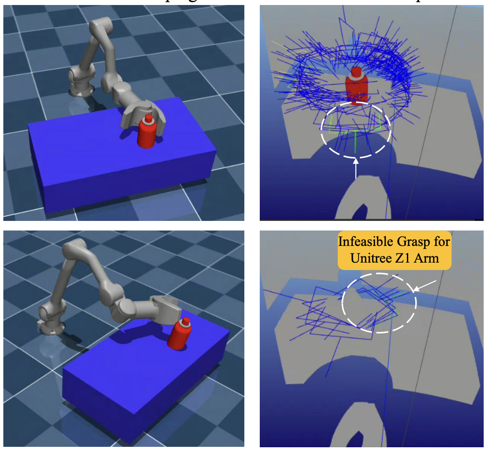
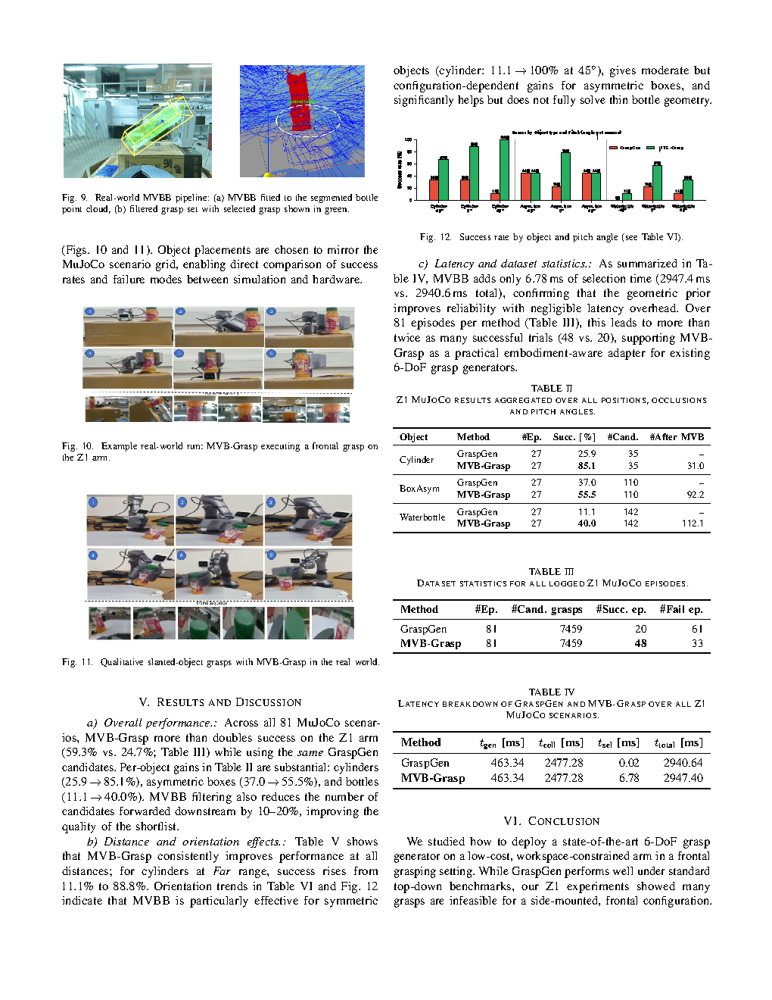

Accepted at IJCNN 2026: MVB-Grasp is a minimum-volume-box filtering framework for diffusion-based 6-DoF grasp generation in frontal manipulation. The project adapts NVIDIA's GraspGen to the Unitree Z1 arm by adding an embodiment-aware geometric prior that filters and re-scores grasp candidates before execution.
The pipeline uses RGB-D perception, YOLOv8 object detection, point-cloud segmentation, GraspGen candidate generation, PCA-based oriented bounding box fitting, MVBB-style face-normal filtering, inverse kinematics, and MuJoCo-based execution evaluation. This training-free adapter improves grasp selection for low-cost, workspace-constrained robot arms without retraining the generator.
The system focuses on making diffusion-generated grasps executable for a frontal camera and constrained robot workspace:

The method selects frontal, execution-friendly grasps while vanilla GraspGen may rank candidates that are infeasible for the Unitree Z1 workspace.
Introduced an O(N) MVBB/OBB filter that removes grasps misaligned with accessible object faces before execution.
Adapted an off-the-shelf diffusion grasp generator by blending learned grasp quality with geometric alignment instead of retraining the model.
Benchmarked grasp success across 81 MuJoCo scenarios covering cylinders, asymmetric boxes, water bottles, distances, and pitch orientations.

The evaluation compares vanilla GraspGen against MVB-Grasp and reports cross-scenario gains in simulation with real-world qualitative validation.
MVB-Grasp achieved 59.3% success across 81 MuJoCo episodes, compared with 24.7% for vanilla GraspGen.
The geometry-aware filtering and re-scoring strategy more than doubled grasp success on the Unitree Z1 setup.
The MVBB selection stage added only 6.78 ms, keeping the adapter practical for real-time deployment.
MVB-Grasp shows that thin, embodiment-aware geometric adapters can substantially improve the reliability of powerful but generic 6-DoF grasp generators. By filtering diffusion-generated grasps through a minimum-volume-box prior, the project bridges perception, geometry, and execution for constrained frontal manipulation on the Unitree Z1 arm.